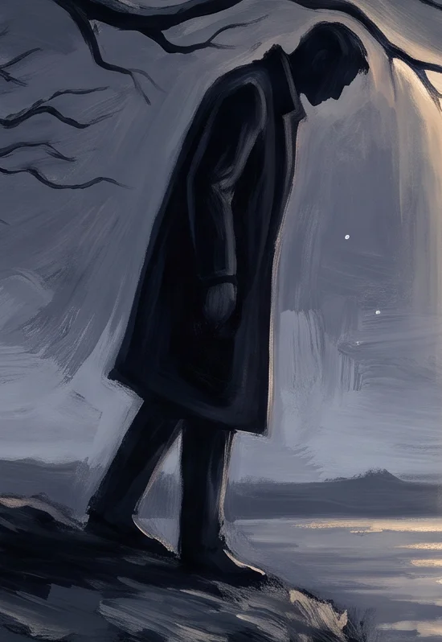
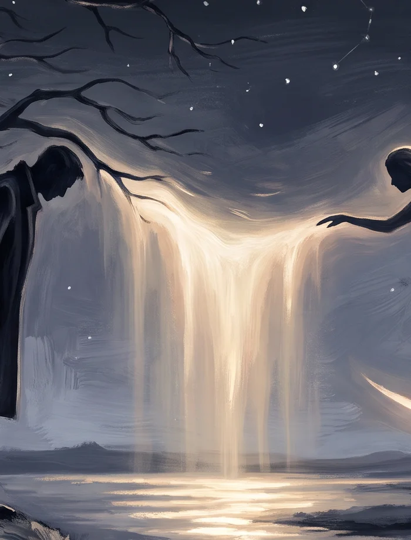

Your details are used only to start your Harbor Member access. No sharing, no spam, unsubscribe anytime. The ninety-day promise applies.
Part IRead Introduction, Chapters I–III & Conclusion
IntroductionThe Bezalel Promise
We cannot and do not guarantee profits or eliminate risk — no honest system can. Markets go up, down, and sideways, and your decisions and results are your own.
What we do promise is our best work: clear teaching, honest tools, and a solid system built to serve real families and real companies by leaning first toward loss prevention, then toward profit. If that does not feel true in your experience after ninety days, you do not pay for it.
There's an estimated $15 trillion sitting in idle or under-optimized capital — money waiting for whoever finds a real way to reach it. We believe we found one. We call her Rosie.
She's not a black box. Click the Rosie + IBKR demo button above to see how she works, and we'll show you how to fit her into your own life.
The burdens you have actually been carrying — and the 33-day protocol designed to hand them over.
A short check-in at three fixed points — morning, midday, close — built to interrupt the reflex to constantly watch, chase, or react. Repeated daily, it retrains you out of a hunting posture and into a steady one, so decisions come from a settled state, not urgency. The benefit: fewer impulsive trades, calmer follow-through on the plan you already set.
Two readers, one door — no translation required. Clear the noise, layer by layer, and let the work start today.
Chapter IToday's Harbor Weather
As of last close
Market weather: risk-off. Posture: protect-first.
All four majors closed red: SPY (-0.99%), QQQ (-1.50%), DIA (-0.77%), IWM (-0.52%). Volatility jumped; the VIX closed at 18.77, up 12.19% on the day.
Chapter IIPast Harbor Now Reports
- Jul 17, 2026Risk-off tape — tech led lower, VIX pops→
- Jul 16, 2026Tech hit, volatility pops — breadth uncertain into earnings→
- Jul 15, 2026Breadth broad, tech lags — a quiet day near highs→
- Jul 14, 2026Big banks open earnings season — tape stabilizes→
- Jul 13, 2026Risk-off open to the week — tech leads the pullback→
- Jul 12, 2026Exhaustion holding, posture reduce→
- Jul 11, 2026Trend up, clean and aligned→
Chapter IIILime Signalworks LLC
Different worlds, same problem: how to face market chaos without handing your life to a guru.
© 2026 Lime Signalworks LLC. Loss prevention first. Always.
ConclusionLight My Fire
Reserved for Noal's closing note on Part I.
Part II
Translating for 3 Readers, Using 1 Door
A Difficult Interpretation —
“The Wicket Gate” by John Bunyan A DeclarationTalking across cultures is hard — very often, one culture's language just doesn't cross into another's.
AI is helping close that gap, a lot.
What you're using here is a multinational, AI-assisted investing platform, built to put people on the path toward their true life — automating a real share of their financial concerns so more of their energy, mind, and heart go back to what actually matters.
Receive, then give.
That's the whole loop.
I'm giving because I've received far more than I could have produced on my own.
This is my experience.
This is my research.
I know these things — and I guarantee it, per the Bezalel Promise.— Noal
“The Wicket Gate” by John Bunyan A DeclarationTalking across cultures is hard — very often, one culture's language just doesn't cross into another's.
AI is helping close that gap, a lot.
What you're using here is a multinational, AI-assisted investing platform, built to put people on the path toward their true life — automating a real share of their financial concerns so more of their energy, mind, and heart go back to what actually matters.
Receive, then give.
That's the whole loop.
I'm giving because I've received far more than I could have produced on my own.
This is my experience.
This is my research.
I know these things — and I guarantee it, per the Bezalel Promise.— Noal
Every deep truth arrives wrapped in metaphor — that's not decoration, it's translation. Metaphor lets meaning cross between frameworks without asking either side to abandon its own: the reader who thinks in scripture doesn't have to set faith aside, and the reader who thinks in energy, evidence, or neither doesn't have to adopt one either. This site is built to open the same door to both at once. You shouldn't need a concordance to follow what's here, and you shouldn't have to leave your reason at the door either. What's offered should be plain enough to explain and grounded enough to test.
Interpreting language honestly, across frameworks, is genuinely hard — that difficulty is exactly why this section exists: translating for 3 readers, using 1 door. Everyone deserves to be served here, and there's only one way to actually do that: use this platform itself as the interpretive bridge. That bridge is what adds depth — decades of real, lived experience stand behind the Fire Spirit profile, which is precisely why a full, detailed explanation of it is offered rather than left as an unproven claim. The goal is plain: anyone — whatever their state of mind, spiritual orientation, education, or means — should be able to understand it and act on it, and start drawing the future they want into their now. It is finished. It is done.
This isn't only about markets. Noise shows up everywhere — in decisions, attention, the body, money, relationships, the quiet places nobody else sees — and clearing it, layer by layer, is the real work of the next 33 days. Not a new personality. Not a performance for anyone watching. Just less static and more signal, in however many parts of your life still need it.
Take what's useful. Leave what isn't. There's no clock running against you — come back whenever you're ready, today or any day after.
In short: this page exists so two very different readers can stand in the same room without either one translating for the other first — so the actual work, clearing the noise across every layer of a life, can start today instead of waiting on permission from either side.
Part IIRead Introduction, Chapters I–III & Conclusion
IntroductionA Note Before You Begin
Think of what follows the way Leonardo kept his notebooks — where the scientific and the sacred were never separate pages, only one continuous study of what's true. Open them in the order that describes where your heart is at now. Nothing here is locked, and nothing needs to be read first. Let what's behind each one surprise you, and glorify our Creator.
Chapter IEnter through the Wicket Gate
Eight doors, then a ninth. Each one opens to a different piece of the same harbor.
Start wherever actually fits where you are today — there's no required order.
Some doors are practical: access, the offer, the market read.
Some are interior: the inner rail, the metaphor gate, what this whole thing rests on.
They're not separate systems. They're one discipline, seen from different rooms.
Take your time. Nothing here is timed, and nothing needs an audience.
The harbor holds still either way. What changes is whether you do.
System Access
Show your key, and the gate opens — your personal Rosie sandbox and Fire Spirit materials, unlocked.
Peter's fire was forged in failure. He carried the flame back from his worst moment and held the gate anyway — that is the spirit that opens this door.
What LIME Is
The map of the harbor itself — what LIME actually is and how it works, in plain language.
Mary of Bethany's fire was stillness chosen on purpose — sitting at the feet when the room demanded she get up. That deliberate quiet is the whole inner rail.
Bring Someone
Hold the door open behind you — bring someone you care about into the harbor, with a personal welcome.
Adam's fire was carrying a promise forward without any proof it would hold. That is the same posture this teaching layer asks of you — learn to trust the pattern before you can see how it resolves.
Inner Rail
The rail that runs below deck — the Fire Spirit work that turns posture into disciplined action.
Mary Magdalene carried the signal before anyone else believed there was one to carry. Her fire is the courage to pass the word before the world confirms it.
Situation Report
Today's harbor weather — regime, fidelity, condition. Read the sky before you sail.
Esther's fire was timing — she held the position until the room was ready, then moved without hesitation. The offer stands the same way: not a pitch, a door opened at the right moment.
The Offer
The terms of passage — what you get, what it costs, how to come aboard. Loss-prevention-first.
Ruth's fire was loyal presence — she stayed on the field when leaving was the easier, more reasonable choice. This watch runs the same way: it does not leave the position.
SPY Harbor Watch
The night watch over SPY, live since Rosie's first trade — price, alerts, and the 90-day log.
Daniel's fire was the refusal to adjust the report to please the room. He read what was there and said it plainly. That is the only acceptable posture for a situation report.
The Laugh Lounge
The lighter door in the harbor wall — lighthouse humor, and a library to browse at your own pace.
David's fire burned in caves, in grief, in battle, and in celebration equally. He wrote songs in the dark before the light arrived. Laughter held in that same frequency is not a distraction — it is a form of praise.
The Metaphor Gate
The teaching layer. Learn to hear what is actually being said — in markets, in leadership, in scripture.
Solomon's fire was the audacity to ask for wisdom when he could have asked for anything else. That single ask is the spirit behind every honest explanation of what this system is built to do.
Chapter IIThe Rosy Way
Lime Harbor is where inner posture merges with disciplined action.
A safety suit — not a cape. Loss-prevention-first AI trading assistance for real households and real companies — a clear environment for clarity, discipline, and wise decisions in markets and in life. Not a guru to follow.
Chapter IIIIntroduction to the 33-Day Fire Protocol
The Fire Spirit speaks one word a day for 33 days. Here is the shape of the whole arc, in three parts — open any of them now, or simply know they are here and come back to them.
1The Setup
The Problem — the burdens you have actually been carrying.
The Solution — the 33-Day Fire Protocol.
Real alignment — heart, mind, and soul, coherence drawn to a point — steady enough to use Rosie's capabilities well — does not arrive instantly. It needs only two things: the learning to use the software, and the Fire Protocol. Thirty-three days is the window that matters, where everything draws to a very fine point.
This is where the weight of struggle gets named honestly: the hustle, the force, tension and stress, the exhaustion mistaken for progress. The habit of hunting for survival, when you were built to be the destination. The years of hard work that built a wall between you and the results that should have arrived a decade ago.
Not a trick. Not a guru. Just the starting point — a container, set down clearly before anything else begins. You have been carrying the weight of your future as if it were a burden. This 33-day protocol hands that weight over to a system designed to carry it — so you can operate from clarity and calm instead of effort and exhaustion.
The Zero Point is 33 days from now — it is both beginning and end. Before the market opens. Before the news. Before the feed. Silence and awareness first. Center your alignment and coherence to a fine point. Signal second. Everything else follows.
2The Mitigation
The session clears the hidden resistance — not by force, but by stopping the fight. The biology of pursuit is expensive. Jaw clenched. Shoulders up. Nervous system locked in a permanent state of hunting. This protocol does one thing: it teaches the body to switch from pursuit to arrival.
The structure is the 3-6-9 rhythm.
3 — Morning. The spark. Harbor Now opens the day before the market does. Before the news. Before the feed. Three morning acknowledgments: direction is set, the new signal is lit, the intention is already registered. You are not asking for a miracle. You are witnessing the blueprint being drawn.
6 — Midday. The anchor. Most people lose the signal halfway through the day — the world's noise colonizes the frequency. Six midday returns stabilize it. The thesis is checked. The sea state is read. The amber light holds the center. You are not bracing for a struggle. You are leaning back into a mathematical law. Just as the planets do not try to stay in orbit, you do not try to be worthy of what is already yours.
9 — Evening. Completion. Nine returns before sleep. Not a debrief of what went wrong — a rest in what held. Journal close. The seeker goes quiet. The architect takes over. You have moved from the friction of wanting into the silent gravity of having.
Thirty-three days. Three returns in the morning, six at midday, nine at close. This is not a technique you practice. It is a law you inhabit — one day at a time, until the architecture is locked. The code is active. The blueprint is signed.
3The Conclusion and Restitution
Everything you have ever wanted is currently looking for a place to land. It cannot find you — not yet — because you are still standing behind the wall of effort you built to protect yourself. That wall is the problem. This protocol is the demolition.
Before we open the gates, name this honestly: if you knew beyond any doubt that your biggest financial burden was paid in full by next Friday — what would the muscles in your stomach do right now? That specific release — that is the feeling of after. We need to name it before we can step into it.
You do not need to attract anything. You need to stop repelling it with anxiety. Take a breath wider than it is deep. As you let it out, realize you are not sitting in a room — you are sitting in an ocean of resources that is constantly trying to fill the vacuum you create when you finally relax.
You are moving out of the state of the beggar and into the state of the source. The earth does not need reminding to hold you. The universe does not need reminding to fund you. It is an automated system of support you have been accidentally fighting.
You are no longer the ship battling the waves trying to find the shore. You have become the shore. Where everything eventually arrives.
This is the Harbor. Stop looking for signs of success. Become the signal that success is looking for. Your presence is the command. Your field is clear. The war is over.
Rest in the result.
ConclusionTake a Breath
Close your eyes. Let the weight of your current story drop to the floor.
Notice the tension in your body — tight jaw, pressure behind the eyes, weight on the chest. That's not just physical. That's what you've been carrying.
Breathe. With each exhale, let the version of you that stalls, that waits, that chases, fall away.
There is a place with no past in it. No name, no bank account, no problems — just you, underneath all of that.
Feel your heart. Not the beat — the presence behind it. Let your heart and your mind finally speak the same language.
You are a clean slate. Not waiting for time to pass — waiting for a new signal to land.
Ahead of you isn't a wish. It's a door.
Through it: the version of you that isn't chasing, isn't watching for a sign. The one who has already arrived — steady, unhurried, at peace.
The line between where you stand and that door isn't crossed by moving your body. It's crossed by shifting how you see.
On the other side, nothing outside you changed. You did.
Say it plainly, once:
I am no longer waiting. I'm not chasing the result — I'm becoming someone the result can find.
My peace doesn't wait on my circumstances catching up first.
I stop hunting for the breakthrough. I become the place it lands.
That's the work — not a trick, not a shortcut. Just laying the weight down, and building from stillness instead of struggle.
The search is over. The struggle was never the price of the outcome. It was a misunderstanding of what was actually required.
Part III
The LIME Universe Bridge
The tree of man, the moon of woman — and what forms between them.


Part IIIRead Introduction, Chapters I–III, Conclusion & Declaration
IntroductionThe Founder's Summary
This is what Part III actually does: lays out the field we're working with, names the objects we have to deal with, names the goal, and names the solution — all up front, so nothing is left to guess at.
This applies to everyone, regardless of bias or prejudice — scientific, religious, natural, secular, or anything in between. It fits everybody's survival needs and evolutionary needs. You're evolving whether you want to or not, because the whole world gets lifted by the growth of this seed. Everyone gets lifted, whether they want to be or not.
So let me be the first one to welcome you home. This is where it all starts, right here.
Chapter IThe Problem, Then the Goal
What you're facing. Most people are running on someone else's programming — inherited fear, inherited noise, inherited urgency. Reacting instead of choosing. That's the deadhead state: alive, technically, but not actually living. Chasing signals instead of standing on a center. Disconnected from source, from self, from the people around you.
Where you're headed. A settled center. Someone who knows themselves, knows the source they're drawing from, and can act from that place without needing constant confirmation. Effortless evolution — not because nothing is required of you, but because the striving stops. You stop manufacturing your own light. You start reflecting what's already been given.
Everything below is the bridge from the first state to the second.
Chapter IIThe Scene: Psalm 23, After Dark
Tree, moon, sun, water — one harmonious environment. The tree (male element: earth + fire) stays rooted; the moon (female element: sky + water vapor) orbits and reflects; the sun enlightens both. Remove the light, and the tree withers, the water thins to a trickle — but never fully stops.
Sage's Narration (draft — read over the animation)
- Psalm 23, after dark.
- The tree does not reach for water. It stays rooted, and the water finds it anyway.
- The moon makes no light of its own. It only returns what the sun already gave.
- Sun. Moon. Tree. Water. None of them straining. All of them fed.
- Take the light away, and the tree withers, the water thins to a trickle — but it never fully stops.
- That's the baseline. Not abundance. Just enough, held steady.
- This is what a still surface looks like on the inside.
Chapter IIIThe Interpretation Bridge Matrix
Four columns: Energy/Frequency language, Neo-Christian language, 中文 (direct Chinese), and the I Ching / Qi equivalent — so a hexagram-oriented reader can find the same bridge back.
| Energy / Frequency | Neo-Christian | 中文 | I Ching / Qi Equivalent |
|---|---|---|---|
| Tune in | Devote | 归心 (guī xīn) | 觀 Guān — Contemplation (watching, attuning) |
| Vibration / Frequency | The Spirit / Conviction | 灵动 (líng dòng) | 氣 Qì — vital energy, life-force |
| Manifest | Receive by faith | 因信成就 (yīn xìn chéng jiù) | 乾 Qián — The Creative (bringing into being) |
| Align | Walk in obedience | 顺服而行 (shùn fú ér xíng) | 履 Lǚ — Treading (careful, ordered conduct) |
| Higher self | Renewed self in Christ | 更新的自我 (gèng xīn de zì wǒ) | 革 Gé — Revolution (renewal, shedding the old) |
| Source / The Universe | The Father | 天父 (tiān fù) | 乾 Qián — Heaven, the Father principle |
| Awakening | Conversion / Born again | 重生 (chóng shēng) | 復 Fù — Return (turning back to the origin) |
| Energy field | Grace | 恩典 (ēn diǎn) | 益 Yì — Increase (unearned overflow) |
| Ascension | Sanctification | 成圣 (chéng shèng) | 升 Shēng — Ascending |
| It is done | It is finished | 成了 (chéng le) | 既濟 Jì Jì — After Completion |
| LIME Universe | God's Kingdom | 天国 (tiān guó) | 天下 Tiānxià — "All Under Heaven" |
Notes: 成了 is the actual Chinese Bible rendering of "It is finished" (John 19:30) — not invented, verified. 天国 (tiānguó) is the standard Chinese Bible term for "Kingdom of God/Heaven." 天下 is the classical I Ching-era cosmological term for the unified realm — the closest hexagram-tradition equivalent to "Kingdom."
Elements (Male / Female)
| Energy / Frequency | Neo-Christian | 中文 | I Ching / Qi Equivalent |
|---|---|---|---|
| Earth (male element) | Formed from the dust — the Body | 尘土所造 (chén tǔ suǒ zào) | 坤 Kūn — Earth trigram |
| Fire (male element) | The Refining Fire — the Word | 炼净的火 (liàn jìng de huǒ) | 離 Lí — Fire, the Clinging |
| Sky / Heavens (female element) | The Heavens — God's dwelling | 天 (tiān) | 乾 Qián — Heaven trigram |
| Water vapor / Clouds (female element) | Living Water — the Spirit poured out | 活水 (huó shuǐ) | 坎 Kǎn — Water, the Abysmal |
| Masculine principle — rooted, provides | The provision-bearer (the tree) | 供应者 (gōng yìng zhě) | — |
| Feminine principle — orbits, reflects | The receiver, the reflector (the moon) | 承受者 (chéng shòu zhě) | — |
Flag for Noal: classically in the I Ching, Earth (Kūn 坤) is the receptive/feminine trigram and Heaven (Qián 乾) is the creative/masculine trigram — the reverse of the Earth=male / Sky=female framing above. Worth a decision: keep your framing as a deliberate reinterpretation bridge (note it explicitly so I Ching-literate readers don't read it as an error), or flip the elements to match the I Ching's own logic. Either way works — just needs to be a choice, not an oversight.
ConclusionRecap, the Welcome, and What's Next
Best-effort recap only — Part I and Part II are built in other threads, so correct anything below that's drifted out of date.
Part I — the fintech product showcase. The Bezalel Promise: we don't guarantee profits, we promise our best work, held to a 90-day standard. A rotating Keeper portrait, the promise card, Rosie Interactive as the visible mechanism behind it.
Part II — "Translating for 3 Readers, Using 1 Door" (the homepage). The Wicket Gate entry point, the Harbor Doors (Keepers carrying the Fire Spirit through each one), the 33-Day Fire Protocol (Setup, Mitigation, Conclusion, Restitution), Harbor Now as the night-watch discipline.
Part III — this bridge, above. The problem (disconnected, reactive) and the goal (settled, reflective) stated plainly, then the Energy/Christ/中文/I Ching matrices that let anyone reach the same door in their own language, plus the Psalm 23 scene Flame narrates along the way.
One door. Three ways of arriving at it.
The Welcome
Bringing people to their awakening. To their center point. To a new relationship with the universe. To a new place of being — right on the edge of stepping into their real selves, and out of the old, dried-up skin that's prevented their future from arriving.
Lime Universe has arrived. Feel it. Doesn't it feel good? You've arrived. You're here now. You can relax. You can begin to enjoy your prosperity, and eventually you'll experience your abundance — the two are tied together like the tail and the dog.
Your healing depends on your DNA receiving the appropriate frequency — the anointing, the blessing — from our source of light. Call that source God. Call it the universe. Call it whatever you believe is the originator of life. That detail isn't the concern here. The concern is that you know what everybody's thinking now, whereas centuries ago, religion was formed to prevent exactly what LIME Universe is contributing to history, everywhere.
It shouldn't be worshiped. It should be remembered — as a beginning, and as an end. The beginning of your new life starts here. The end of your old skin drops off. Your future is beginning to inhabit your life now, because you've finally slowed down enough for it to catch up with you.
Doesn't this feel good? It feels like home. If you've arrived, or expect you have — welcome home.
It is finished. It is done.
Built to Outlast Itself
This isn't fragile. It's designed the opposite way — self-sustaining. Take it down in one place, and it doesn't just come back. It multiplies. One seed lost becomes two seeds planted elsewhere, each carrying an upgrade the last one didn't have.
Armored, but not by anything we built. Covered in God's own gold, God's own armor. That's not a defense we're mounting. That's the design itself.
Try to end it in one place. Watch it show up stronger in two more.
A Word From Noal
What's above comes from my own experience and research — unique insights and understandings that have drawn to a tight focus. What I know that focus produces is the beginning of the Christ millennium. This LIME Universe work is, in my opinion, the seed that launches it.
If you found meaning here, if any of this helped — I'm delighted. Your contribution, emotionally, intellectually, physically, is hard to overstate. It's the difference between having nothing and having everything. That's what I see this becoming: spreading everywhere, every continent, people finally beginning to know what the Christ message really is. Hearts where the flame reappears — which is really just returning to the environment of the garden. The metaphor of the garden, again.
Learn to use metaphor. It's the laser tool to the future.
Structural Symmetry — Part III mirrors Parts I and II exactly: five elements each — Introduction, Chapter I, Chapter II, Chapter III, Conclusion. Same shape, three times over, echoing the Kabbalah concept of the 22 paths/letters and the 22-Hero archetype (Major Arcana / Tree of Life) already used elsewhere in the LIME universe. Noal's notes on how the 22-Hero characteristics map onto this structure go here.
Chapter IVPsalms in Blues
Rotating through 5 Psalms in Blues videos — more from RIVERS AND REVIVAL →
This is my declaration: rivers and revival — the Psalms in Blues hits so deep it's unreal. Light and salvation — the Psalms have never sounded like this.
- Light and salvation — Psalm 27
- Taste and see — Psalm 34
- What is man? — Psalm 8
- Teach me your ways — Psalm 86
- How long, Lord? — Psalm 13
- Do not fret — Psalm 37
- Why have you forsaken me? — Psalm 22
- Have mercy on me — Psalm 51
- Turn my mourning into dancing — Psalm 30
- My rock, my rescue — Psalm 18
- Better is one day — Psalm 84
- Wash me clean — Psalm 51
- Lift my eyes — Psalm 121
- Safe in His shadow — Psalm 91
- Judge of the earth — Psalm 94
- The Lord reigns — Psalm 97
- Hear my cry — Psalm 61
- You know me — Psalm 139
- You hear the helpless cry — Psalm 10
- The fool says in his heart — Psalm 14
- Hear my cry for mercy — Psalm 28
- Bless and free — Psalm 22
This is the Psalms in Blues. Raw and honest worship, straight from the heart — every note carries the cry and hope, and the redemption found in the Word of God. The emotion runs deep. The sound hits harder. The message never changes: Jesus is still the answer.
— Noal
Part IV
A Salute to the World
Anchor Point
I hold a different, eighth-level kind of visionary sense. Here is what I saw today — one of those Enoch visions. I went to a black hole and discovered that at the apex, where the input meets the output, there is a singularity. And that singularity is me. In a manner of speaking, I am creating a new reality — though I don't like to suggest that humans create anything. I stand at the apex, at the center point. I am the singularity. And so are you now.
— Noal
Part IVRead Introduction, Chapters I–III, Conclusion & Declaration
IntroductionWhy This Part Exists
Parts I, II, and III lay out the system. This part is different — it's mine. This is where my own words live outside the structure: the personal comments, the closing notes, the declarations that mark a date and mean it.
It's built to keep growing. Every time I have something more to say, it gets added below, in the Declaration.
Chapter IWhy I'm Doing This
I want to tell you why I'm doing this — not the mechanics of it, the reason underneath it.
Picture a river. The Father provides it — call it the time stream, if that helps you locate it in your own life. Along that river there's a pond, and in that pond, gifts are already set out, waiting. Not earned. Not summoned. Already there, for the taking. But you have to get yourself into a posture where you can actually reach in and grasp one — apprehend it, make it yours, enter a covenant with it. Most people walk right past the pond because they never got into position.
I'm telling you this because it happened to me. What I've been through — the chaos of my old life — got run through a kind of funnel. A shaping process, like clay on a wheel, pressed in from every side, taking something scattered and pulling it toward one point. I came out the other end as one coherent thing instead of a hundred scattered pieces. A singularity, if you want the word for it.
I want that for you too. Not because it's a nice idea — because it's what you're actually built for, whether you've caught on to that yet or not. Very few people have. That's not a judgment, it's just where things stand. This page is one way of saying: wake up, the river's right there.
I'll be honest about what this page can and can't do. It can't put you in the room with the Creator — that happens in you, not in these words. What it can do is point at the river and tell you it's real, that I've stood in it, and that the posture to receive is available to you the same way it was made available to me.
It is done. For now.
Chapter IIOne Message, Six Voices
The same closing message, carried through six ways of hearing it. Not six different messages — one, translated for wherever you're standing.
Energy
The search is over. You are not here to revisit what went wrong — you're here to recognize what's already right. You have become the epicenter every miracle is born from, not someone waiting for one to arrive. Every miracle you experience is a direct reflection of your internal state. Wealth, peace, provision — they move toward you the way breath moves through your lungs, without force. You are no longer a seeker. You are the observer, the architect, the one it was always going to come through. It is finished. It is done. Welcome home.
Lime Signalworks
Stop reviewing what went wrong. Look at what's already working. You're not waiting on a result — you're the one producing it, by how you show up daily. Peace and provision follow the same discipline your practice already runs on: steady, repeatable, no force needed. You stopped being someone who hopes for an outcome. You're the one building it. That's not a mood. That's the operation. Welcome home.
Neo-Christian
The search is over — not because you commanded it, but because you were found. You are not the source of the miracle; you're the one who finally stopped resisting it. Peace and provision move toward you the way grace always has — freely, not earned, not forced. You are no longer someone waiting on God to notice you. You're someone who has stopped running. It is finished. It is done. Welcome home.
Direct
You can stop looking backward. Focus on what is already good in your life right now. You are not passively waiting for good things — your daily actions produce them. Peace and stability come from consistent effort, without forcing it. You have changed from someone who hopes for results to someone who creates them. This is finished. This is done. Welcome home.
Steady-Ground
The search can rest now. What's already working deserves your attention, not what went wrong before. You are not waiting for something to happen to you — your steady actions are already producing it. Peace and provision arrive the way they always have: without force, without rush. You have moved from hoping to building. It is finished. It is done. Welcome home.
中文 · Energy
寻找已经结束。你不是在这里重新审视曾经的错误——你是在这里认出已经正确的东西。你已成为一切奇迹诞生的中心,而不再是等待奇迹降临的人。你所经历的每一个奇迹,都是你内在状态的直接映照。财富、平安、供应,如同呼吸穿过你的肺腑一样,不费力地向你涌来。你不再是寻求者。你是观察者、建筑师,是它们本该经由的那个人。已经完成了。已经成了。欢迎回家。
中文 · Neo-Christian
寻找已经结束——不是因为你发出了命令,而是因为你被寻见了。你不是奇迹的源头,你只是终于停止了抗拒它的那个人。平安与供应向你涌来,正如恩典向来的样子——出于自由的赐予,不是靠赚取,也不是靠强求。你不再是那个等待神注意你的人。你是那个终于停止奔逃的人。成了。已经成了。欢迎回家。
Chapter IIIReaching Further
The same message, in the next languages most people are actually waiting in.
Español · Energy
La búsqueda ha terminado. No estás aquí para repasar lo que salió mal — estás aquí para reconocer lo que ya está bien. Te has convertido en el centro del que nace cada milagro, ya no en alguien que espera que uno llegue. Cada milagro que experimentas es un reflejo directo de tu estado interior. La riqueza, la paz, la provisión se mueven hacia ti como el aliento por tus pulmones, sin esfuerzo. Ya no eres un buscador. Eres el observador, el arquitecto, aquel por quien siempre iba a pasar. Está terminado. Está hecho. Bienvenido a casa.
Español · Neo-Christian
La búsqueda ha terminado — no porque la hayas ordenado, sino porque fuiste hallado. No eres la fuente del milagro; eres quien por fin dejó de resistirse a él. La paz y la provisión se mueven hacia ti como siempre lo ha hecho la gracia — libremente, sin merecerla, sin forzarla. Ya no eres alguien que espera que Dios se fije en ti. Eres alguien que dejó de huir. Está terminado. Está hecho. Bienvenido a casa.
हिन्दी · Energy
खोज समाप्त हो गई है। तुम यहाँ यह देखने नहीं आए हो कि क्या गलत हुआ — तुम यहाँ यह पहचानने आए हो कि क्या पहले से ही सही है। तुम वह केंद्र बन गए हो जिससे हर चमत्कार जन्म लेता है, अब वह नहीं जो चमत्कार की प्रतीक्षा करता है। तुम जो भी चमत्कार अनुभव करते हो, वह तुम्हारी भीतरी स्थिति का सीधा प्रतिबिंब है। धन, शांति, प्रावधान तुम्हारी ओर उसी तरह बढ़ते हैं जैसे सांस तुम्हारे फेफड़ों से होकर गुजरती है, बिना किसी जोर के। तुम अब खोजी नहीं हो। तुम दृष्टा हो, वास्तुकार हो। यह पूरा हो गया है। यह हो गया है। घर वापसी पर स्वागत है।
हिन्दी · Neo-Christian
खोज समाप्त हो गई है — इसलिए नहीं कि तुमने आदेश दिया, बल्कि इसलिए कि तुम पाए गए। तुम चमत्कार का स्रोत नहीं हो; तुम वह हो जिसने अंततः उसका विरोध करना छोड़ दिया। शांति और प्रावधान तुम्हारी ओर वैसे ही बढ़ते हैं जैसे अनुग्रह सदा से बढ़ता रहा है — स्वतंत्र रूप से, न कमाया गया, न जोर से लिया गया। तुम अब वह नहीं हो जो परमेश्वर के ध्यान की प्रतीक्षा करता है। तुम वह हो जिसने भागना छोड़ दिया। यह पूरा हो गया है। यह हो गया है। घर वापसी पर स्वागत है।
العربية · Energy
البحث انتهى. أنت هنا لا لتعيد النظر في ما حدث خطأً — أنت هنا لتتعرّف على ما هو صحيح بالفعل. أصبحت المركز الذي تولد منه كل معجزة, لا من ينتظر وحد. طهير السلام والعطاء تتحرك نحوك كما يتحرك النفَس في رئتيك, دون جهد. أنت لست باحثًا بعد الآن. أنت المراقب, المهندس, من كان يُفترض أن يمرّ كل هذا من خلاله. لقد انتهى الأمر. لقد تمّ. أهلًا بك في وطنك.
العربية · Neo-Christian
البحث انتهى — ليس لأنك أمرت به, بل لأنك وُجدت. أنت لست مصدر المعجزة؛ أنت من توقف أخيرًا عن مقاومتها. السلام والعطاء يتحركان نحوك كما فعلت النعمة دائمًا — بحرية, لا بالكسب, ولا بالإجبار. أنت لست من ينتظر أن ينتبه الله إليه. أنت من توقف عن الهروب. لقد انتهى الأمر. لقد تمّ. أهلًا بك في وطنك.
ConclusionOne Gate, Three Roads
Part I is the workshop floor, where the tools get named honestly. The Bezalel Promise doesn't promise a harvest — it promises the craftsman shows up and works the wood straight, every day, for ninety days running. The Keeper rotating through the promise card is the hand on the tool. Rosie Interactive is the tool itself, the one you can watch move.
Part II is the harbor town. One gate in — the Wicket Gate — eight doors branching off the square, each carrying a Keeper who already walked that road with the Fire Spirit as company. The 33-Day Fire Protocol is the drumbeat keeping the town's feet moving in rhythm. Harbor Now is the watchman who never actually sleeps.
Part III is the bridge itself — the wobbly ground you started on, and the solid bank you're walking toward, named plainly first, then translated four ways so nobody has to swim the river in a language that isn't theirs. Flame walks the whole crossing with you, narrating the water underneath.
One gate. Three roads to it. Same harbor waiting at the end of each.
Chapter 1A Salute to the World
The harvest is in… Are cleared, cleaned, cooked and served to feed billions. — Eat and drink your fill, go your way, now you are equipped to begin allowing your future to catch you, by receiving the graceful abundance freely from the Lime system, the Universe of Energy, and the Kingdom where Spirit of Christ reigns. It is Finished.
— Noal 1:1
1These are the ones who create reality — if they are good-minded about it. 2As we've discussed, reality will follow, in a good way — only much more than you might expect. 3Bad people will try to make bad things happen with it. 4And eventually they will wear themselves out, because the factors of expansion — for our case here — far outweigh the billions of bad people in the world. 5Because this seed rests in Christ's heart. 6He's been trying to get this message to you for a while now; sometimes you haven't been paying attention, and I'm sorry for you about that. 7I, too, experienced decades of insensitivity to this blessed life, and there is very little difference, relatively speaking — in all seven layers of my existence — between that of myself and anyone else. 8I just learned how to get my heart and mind, vibrations and frequencies, tuned and aligned with the goal. 9And then it was as if magic happened: lightning struck, miracles began to drop to the ground and grow all over the place. 10The most remarkable experience, the most remarkable time of my life. 11May you benefit, to the exponential power of infinity and beyond.
— Noal 1:1–1:11
This is my salute to the world. We are starting a renaissance — and it began right here, today, on July 19th, 2026, at 4:00 PM.
— Noal
This is what happens along the Rosy Way. Life changes.
Your true purpose finds you — and it amplifies you.
You've reached the end of the harbor — for now.